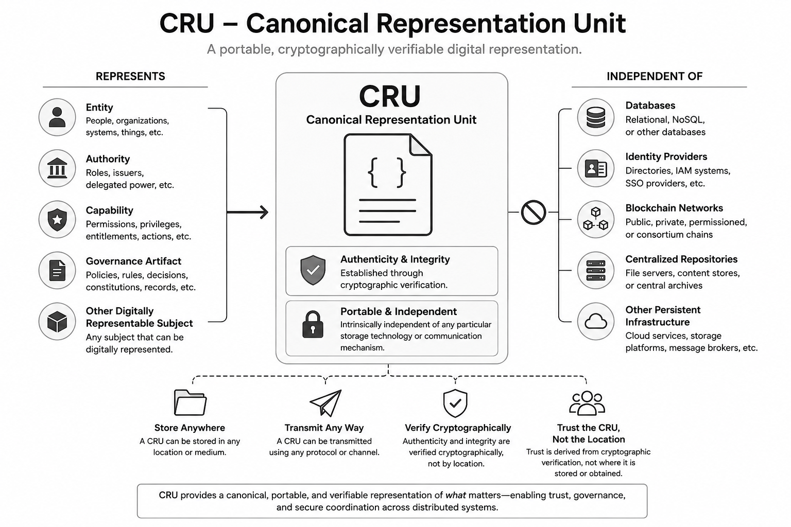

Canonical Representation
One authoritative representation of an entity.
We develop infrastructure for governance, authorization, provenance, and secure distributed systems.
Explore CRUThe next layer of digital infrastructure may not be a platform.
It may be a unit.
CRU — Canonical Representation Unit
For decades, digital representations have depended on the systems around them—databases, platforms, repositories, networks, and authorities.
CRU explores a different possibility:
What if the representation itself could become the trusted primitive?
A CRU is designed to create a portable, verifiable digital representation that can remain meaningful across systems and environments—without being defined solely by where it is stored, who hosts it, or which system recognizes it.
Portable. Verifiable. Independent by design.
A new primitive for a distributed world.
Dench Labs is exploring what becomes possible when digital representations can stand on their own.
CRU technology is patent pending.

The CRU architecture rests on five foundational pillars. Together, they establish the CRU as a foundational primitive for decentralized governance.
One authoritative representation of an entity.
Verifiable authenticity and immutable provenance.
Independence from any storage technology or repository.
Governance emerges through linked CRUs.
Operates consistently across all infrastructures.
These principles replace repository-centric objects with portable, cryptographically verifiable canonical representations that can exist anywhere while preserving identity, integrity, and meaning.
The CRU can itself become the boundary at which identity, authorization, capability, state, execution, governance, and provenance are defined and enforced.
CRU does not replace established security mechanisms. It provides a common computational unit in which identity, capability, state, execution, provenance, and governance can be connected.
| Approach | Primary Unit | Primary Function |
|---|---|---|
| IAM | Identity | Establishes who the subject is |
| RBAC / ABAC | Role / attributes | Determines permitted access |
| Zero Trust | Access decision | Evaluates access in context |
| Micro-segmentation | Network / workload | Constrains communication paths |
| CRU | Canonical computational unit | Connects identity, capability, state, execution, governance, provenance |
Portable persistence separates the canonical representation from the repository that happens to hold it.
Canonical identity
Integrity
Provenance
Meaning
Cloud · Edge · Device · Gateway
The CRU can move across infrastructures without surrendering its canonical identity.
CRU does not replace Zero Trust Architecture. ZTA continuously evaluates whether access should be allowed under current conditions; CRU provides a governed, stateful representation of the entity from which capabilities can be derived.
ZTA determines whether a request should be permitted, restricted, or denied based on identity, device posture, resource, context, policy, risk, and other relevant signals.
CRU provides a canonical computational representation in which identity, governed state, lifecycle, capability, provenance, and governance can remain connected.
ZTA evaluates current access conditions. CRU represents the governed state of the entity that is requesting or performing the action.
ZTA can evaluate whether an action should be allowed. CRU can derive the capabilities that follow from the entity's current governed state.
ZTA can continuously re-evaluate access. CRU makes changes such as promotion, transfer, qualification, suspension, or mission assignment explicit state transitions.
CRU capabilities can be scoped, time-limited, condition-dependent, revocable, auditable, and bound to the execution environment. ZTA remains responsible for continuous access evaluation and enforcement.
CRU + ZTA: Governed State → Capability → Zero Trust Evaluation → Enforcement → Execution.
Consider a purely conceptual security analogy involving four actors and three capability levels: a toy gun, a real gun, and a bazooka. The point is not the object—it is the difference between resource access and governed capability.
Authorized operator
Maintenance
Mission administrator
Unauthorized actor
Changing mission state, risk, device state, identity, location, time, or governance conditions can change the capabilities available to a CRU.
Identity establishes who is represented; capability establishes what the represented unit may do; governance establishes how state changes and when capabilities may be exercised.
Alice's Person CRU represents her current role, rank, organization, qualifications, and active status. Capabilities are derived from that governed state.
A mission assignment can add a narrowly scoped capability for a defined duration and under specified conditions without permanently changing Alice's identity.
A change in device posture, location, mission, time, or other governed conditions can reduce the capabilities currently available to the CRU.
Suspension, termination, expiration, or other governance events can cause capabilities or capability leases to expire or be revoked.
Person CRU ↓ Current governed state ↓ Capability derivation ↓ Effective capabilities ↓ ZTA evaluates current request ↓ PEP enforces ↓ Execution
A CIDD decision can evaluate identity, device, mission, current state, requested capability, and governance policy. The result is a decision about what capability may be exercised under current conditions.
Identity + Device + Mission + State + Requested Capability + Governance
↓
CIDD
↓
Capability Decision
Identity establishes who is represented. Capability establishes what the represented unit may do. Governance establishes how that capability evolves and under what conditions it may be exercised.
These scenarios show why capability is more than a permission lookup. A capability belongs to a governed computational unit, can be bounded by state and context, can change when governed events occur, and can be exercised only when current Zero Trust conditions permit it.
Alice moves from Engineer to Senior Engineer. The event changes the Person CRU's governed state. Capabilities such as approval, supervision, or access to higher-sensitivity resources can be derived from the new state instead of being manually added as unrelated permissions in each system.
Alice receives a mission-specific capability valid only for the assignment, resource scope, geography, and time window defined by governance. Her underlying identity and permanent role remain unchanged. The capability expires automatically when its lease conditions are no longer satisfied.
Alice's identity remains valid, but her device falls out of an approved posture. The effective capability available to her CRU can move from full execution to restricted execution, read-only access, or no exercise. ZTA can use the changed capability state as an input to the access decision.
Alice's organization and identity are unchanged, but the mission changes. A capability appropriate for one mission may be restricted, replaced, or newly enabled for another. The CRU therefore carries an evolving governed capability state rather than a permanent list of permissions.
Communications become intermittent or unavailable. A CRU can retain verifiable state, provenance, and bounded capability conditions locally, allowing authorized execution within predetermined limits. When connectivity returns, subsequent governance state can be reconciled.
A risk signal, qualification failure, operational condition, or other governed trigger occurs. The CRU's effective state can transition before the next ordinary access request. Existing capabilities may be suspended, narrowed, or restricted.
A qualification expires, an assignment ends, a role is suspended, or an authority is revoked. The capability or lease is invalidated through a traceable state transition. The CRU preserves the provenance of why the capability ended and what state replaced it.
Alice operates across organizational or mission boundaries. Her CRU can represent portable, verifiable governance state and capability semantics while the receiving environment retains local authority to determine whether and how the capability may be exercised. Portability does not mean automatic trust.
Eve presents credentials or other identifying information associated with Alice, but the request does not satisfy the governed conditions for Alice's capability. The receiving environment can evaluate the requesting CRU, device state, capability provenance, mission context, and current policy before allowing execution. A mismatched or unverifiable context results in denial or restriction rather than an automatic transfer of Alice's capability.
A role change can become a governed state transition of Alice's Person CRU. The resulting capability state can then be used by existing Zero Trust infrastructure when Alice requests access.
Alice
Promotion Event
Alice Person CRU
Derived State
The CRU does not bypass Zero Trust. The current governed state and resulting capabilities become part of the information available to the authorization process.
The promotion is represented as a change to Alice's Person CRU rather than as unrelated permission edits across every relying system.
New capabilities can be derived, scoped, leased, renewed, restricted, or revoked according to the new governed state.
When Alice actually requests access, Zero Trust can still evaluate device posture, resource sensitivity, context, risk, and policy.
Clean separation: CRU answers what Alice is currently governed to possess; ZTA answers whether Alice should exercise that capability now.
A risk event is a governed signal or condition that may require the CRU to change state, narrow a capability, suspend an operation, or require renewed verification. The event is distinct from the authorization decision: it changes the conditions under which subsequent decisions are made.
This is a key distinction between a static permission model and a governed computational unit. A material event can change the CRU's effective state before a user or system asks to exercise a capability.
A device begins reporting a posture inconsistent with policy. The event can cause the associated CRU's effective capability state to move from normal execution to restricted or suspended operation.
A mission changes phase, objective, location, or operating conditions. A capability that was appropriate for the prior context may become unavailable, narrowed, or replaced without changing the underlying identity.
A certification, training qualification, or other prerequisite reaches its expiration condition. The event can invalidate a dependent capability through a traceable governance transition rather than relying on every downstream application to discover the change independently.
A verified threat indicator or operational warning changes the risk context. Governance may require a capability to be narrowed, require additional conditions, or suspend exercise until the event is resolved.
An authorized governance action removes or suspends an authority. The revocation becomes part of the CRU's state and provenance, allowing relying systems to recognize the changed condition without treating the old capability as permanently valid.
A previously restricted condition is resolved and validated. Governance can transition the CRU toward an appropriate state, but recovery does not automatically imply unrestricted access; current ZTA conditions still apply when a capability is exercised.
A CRU is not merely a static record. Its identity, capabilities, state, provenance, and governance can persist while its operational condition evolves.
CRU formalization
Governance model
Capability semantics
CRU VM
Governance VM
Gateway
Edge CRU
Simulation
Adversarial scenarios
Interoperability testing
Distributed systems
AI systems
Mission environments
CRU is an architectural primitive, not a claim that existing security approaches are obsolete. Zero Trust, IAM, RBAC, ABAC, micro-segmentation, cryptography, and other mechanisms can remain part of a CRU-based system.
CRU does not eliminate segmentation or guarantee security. It provides a more explicit computational boundary for representing, governing, and enforcing capabilities and state.
CRU is an architectural primitive for canonical, portable, cryptographically verifiable, capability-oriented governed computation.
As digital systems evolve, we are exploring how CRUs may extend into new forms of autonomous and intelligent digital representation across:
Maintain an authoritative representation of the actor, device, service, or computational object.
Determine which capabilities are available under the current governance context.
Couple authorization to the environment in which an authorized action actually executes.
Allow changing conditions to alter capability availability, restrictions, and lifecycle.
Bind policy, constraints, decision logic, provenance, and lifecycle rules to the governed unit.
Dench Labs LLC is a technology research and development company focused on foundational mechanisms for trusted digital coordination.
Our work explores how structured objects, governance relationships, authorization, and provenance can become durable primitives for distributed systems.
CRU and related technical concepts are part of ongoing research and intellectual property development by Dench Labs LLC.